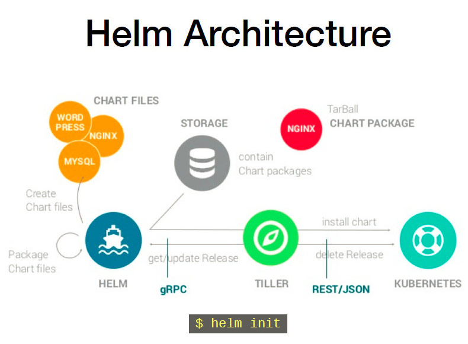

helm的安装
一、helm介绍

1.什么是 Helm Charts
Helm Charts是 Kubernetes 项目中的一个子项目（https://github.com/kubernetes/helm） 目的是提供 Kubernetes 的包管理平台。Helm 能够帮你管理 Kubernetes 的应用集合。Helm Charts 能够帮你定义，安装，升级最复杂的 Kubernetes 应用集合。Helm Charts 很容易创建，做版本化，共享和发布，最新版本的 Helm 由 CNCF 进行维护，目前在业界已经有大量的公司在使用 Helm，其中包括谷歌，微软，Bitnami 等大型企业。 Helm 由两部分组成：
- Helm 客户端。它用来创建，拉取，搜索和验证 Charts，初始化 Tiller 服务。
- Tiller server。跑在 Kubernetes 集群之内，管理这些应用的发布。
2.为什么需要 Helm Charts
很多Kubernetes 的使用者在部署一些通用组件时，例如数据库，CI 工具，缓存组件，负载均衡等等，通常会需求一些业界统一的最佳实践进行应用的配置。
目前市面上有很多仓库提供这样的最佳实践，例如：Kubernetes 的contrib repository，Helm Charts Repository (https://github.com/kubernetes/charts)，Bitnami Charts Repository. 面对如此众多的来源，用户更希望有一个统一的入口去管理所有 Helm Charts仓库，于是就有了 Helm 私有仓库的诞生。 它的好处在于：
- 管理复杂的应用集合Charts 能够描述最复杂的应用，提供可重复，幂等性的安装，以及提供统一的认证中心服务。
- 容易升级为团队提供实时的镜像升级，以及自定义 webhook，解决镜像升级的痛点。
- 企业内部共享Charts能够很容易的进行版本化，共享，在企业内部提供私有Heml 仓库服务，解决了从官方源拉镜像速度奇慢的痛点。
- 回滚使用 Helm 可以方便的进行应用的回滚，回到之前的 Release 版本。
目前在Kubernetes Charts repository有两个主要的目录Stable 和Incubator，Stable 里有近百种应用，例如：Artifactory, Jenkins，Mysql，MariaDB，Consul,Gitlab, Grafana,Nginx 等等。Incubator 里也有cassandra，Kafka，zk 等等知名软件，并且 Stable 仓库会持续的更新，提供更为便捷的应用配置管理。
二、安装helm
1.获取安装包
在官网获取helm的最新版本或者其他版本 https://github.com/helm/helm/releases
我在这儿选择了最新的版本helm-v2.11.0
[root@master src]# wget https://storage.googleapis.com/kubernetes-helm/helm-v2.11.0-linux-amd64.tar.gz
[==================================================>] 19,149,273 6.58MB/s in 2.8s
2018-10-19 15:27:50 (6.58 MB/s) - ‘helm-v2.11.0-linux-amd64.tar.gz’ saved [19149273/19149273]
然后就是解压，将二进制包放在/usr/local/bin或者/etc/kubernetes/bin下
需要说明的是，这一步其实就是安装helm的client端
2.安装server
接下来就是初始化helm server 因为gfw的原因，所以需要要使用阿里云提供的镜像仓库，可以去 https://dev.aliyun.com/ 查看 初始化命令：
helm init --upgrade -i \
registry.cn-hangzhou.aliyuncs.com/google_containers/tiller:v2.11.0 \
--stable-repo-url https://kubernetes.oss-cn-hangzhou.aliyuncs.com/charts
上面的命令实质就是在k8s上部署了一个deployment，这个deployment的名字 tiller，它其实就是helm的服务端。 查看一下这个pod
# kubectl get pod -n kube-system |grep till
tiller-deploy-cd5cf5bb6-xbjfl 1/1 Running 0 2m
服务端和客户端安装好之后，看看版本:
# helm version
Client: &version.Version{SemVer:"v2.11.0", GitCommit:"2e55dbe1fdb5fdb96b75ff144a339489417b146b", GitTreeState:"clean"}
Server: &version.Version{SemVer:"v2.11.0", GitCommit:"2e55dbe1fdb5fdb96b75ff144a339489417b146b", GitTreeState:"clean"}
注意：如果tiller的镜像不能正常的拉取或启动的话，会显示如下：
[root@master bin]# helm version
Client: &version.Version{SemVer:"v2.11.0", GitCommit:"2e55dbe1fdb5fdb96b75ff144a339489417b146b", GitTreeState:"clean"}
Error: could not find a ready tiller pod
提示：
所谓client端其实就是那个helm二进制包，用来执行一些列的
helm xxx命令的 所谓server端其实就是那个pod（helm tiller） 另外，需要在每个node节点需要安装socat``` yum install -y socat 否则，会报类似的错误： unable to do port forwarding: socat not found. Error: cannot connect to Tiller ```
使用helm部署一个应用
创建服务账号
# kubectl create serviceaccount --namespace kube-system tiller
serviceaccount "tiller" created
创建集群的角色绑定
# kubectl create clusterrolebinding tiller-cluster-rule --clusterrole=cluster-admin --serviceaccount=kube-system:tiller
clusterrolebinding.rbac.authorization.k8s.io "tiller-cluster-rule" created
为应用程序设置serviceAccount
# kubectl patch deploy --namespace kube-system tiller-deploy -p '{"spec":{"template":{"spec":{"serviceAccount":"tiller"}}}}'
deployment.extensions "tiller-deploy" patched
仓库的添加与删除
查看仓库
# helm repo list
NAME URL
stable https://kubernetes-charts.storage.googleapis.com
local http://127.0.0.1:8879/charts
删除仓库
helm repo remove stable
添加仓库
helm repo add ali-apphub https://apphub.aliyuncs.com
搜索Helm应用
# helm search jenkins
NAME CHART VERSION APP VERSION DESCRIPTION
stable/jenkins 0.13.5 2.73 Open source continuous integration server. It s...
# helm repo list
NAME URL
stable https://kubernetes.oss-cn-hangzhou.aliyuncs.com/charts
local http://127.0.0.1:8879/charts
查看应用
helm inspect stable/jenkins
helm inspect values stable/jenkins
安装应用
# helm install stable/jenkins
使用fetch进行安装
有时候需要修改一些参数,所以可以先把安装包fetch下来,修改后再进行安装
helm fetch stable/redis
cd 对应的目录中
helm install -n redis-sure -f values.yaml .
更新release
helm upgrade mysql -f mysql/values.yaml --set resources.requests.memory=1024Mi mysql
查看指定release的历史部署版本信息
helm hist mysql
版本回滚
helm rollback --debug mysql 1